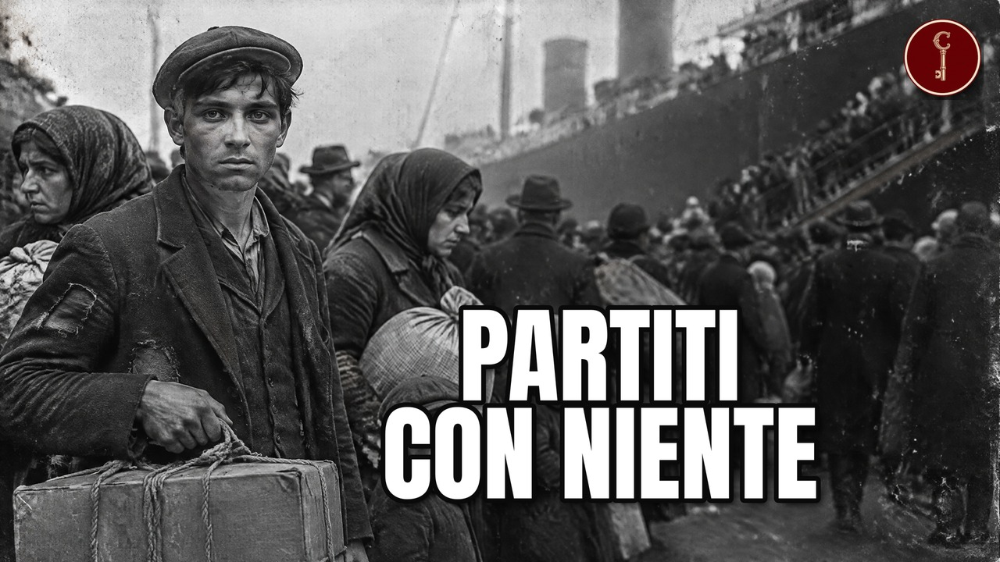

Veneto
I 21 veneti che hanno fatto FORTUNA all'estero (uno ha progettato il primo microprocessore)

Guarda il video su YouTubeI 21 veneti che hanno fatto fortuna all'estero Un bambino di undici anni sul molo di Le Havre, con in tasca l'indirizzo di uno zio. Un ragazzo che vende gelato a Wall Street. Un falegname che a Chicago costruisce un carrettino rosso. Un fisico che a Palo Alto disegna il primo microprocessore. Tutti nati in Veneto, tutti partiti, tutti arrivati più in alto di quanto chiunque si aspettasse.
Le fonti
Le fonti su cui si basa il video.
Adweek (Robert Klara)
How an Immigrant Cabinetmaker Accidentally Invented the Toy That Defined American ChildhoodAmerica Comes Alive
Ice Cream Cones: The True Storyamericanrifleman.org
Rossi: Going Strong Since 1889anpuh.org.br · 2011
A família Eberle e o início do desenvolvimento industrial de Caxias do Sulanpuh.org.br · 1945
Trabalhadores do Aço na Terra da Cana: os metalúrgicos e a formação da classe operária no município de PiracicabaArtribune
Sotheby's ha venduto la banana di Cattelan per oltre 6 milioni di dollari (sì, ma in criptovaluta)Assembleia Legislativa do Estado de São Paulo
Indicação nº 6782, de 2021Assembleia Legislativa do Estado de São Paulo (primaria)
Lei n. 6.010, de 30 de dezembro de 1987Associated Press (John Leicester), ripreso da FOX 5 Atlanta
Pierre Cardin, French fashion designer and licensing pioneer, dies at 98Associated Press (via KSL.com)
French designer Pierre Cardin, licensing pioneer, dies at 98Australian Dictionary of Biography (ANU Press) · 1909
Australian Dictionary of Biography Volume 19: 1991–1995 (A–Z) — Grollo, Luigi ArturoAustralian Dictionary of Biography (Ilma Martinuzzi O'Brien), online 2018, vol. 19 2021
Grollo, Luigi Arturo (1909–1994) | Australian Dictionary of Biographyaustralianwine.com
Michael Dal Zotto | Australian Winebakeryandsnacks.com
Kellogg to acquire controlling stakeholder of Brazil's Parati for $429mBeer52 Glug
GiustiBellunesi nel Mondo
Italiani all'estero 2025: 6,6 milioni, dati Istat e VenetoBroadsheet (Sofia Levin)
Building an Italian Empire: Stories From King & Godfree, the 150-Year-Old Jewel in Lygon Street's CrownBurigotto (sito ufficiale)
Company | BuriBusiness In Edmonton
From foundations to fine wine.Business Wire (comunicato Kraft Heinz)
Kraft Heinz Completes Sale of Nuts Businessbusinessincalgary.com
From foundations to fine wine.Calcolo di Casato Italiano su dati BLS (CPI-U), Federal Reserve G.5A, BCE
Calcolo di Casato Italiano: conversione in euro di oggi (cardin)Calcolo di Casato Italiano su dati BLS (CPI-U), Federal Reserve G.5A, BCE
Calcolo di Casato Italiano: conversione in euro di oggi (dedini)Calcolo di Casato Italiano su dati BLS (CPI-U), Federal Reserve G.5A, BCE
Calcolo di Casato Italiano: conversione in euro di oggi (dedini_debiti)Calcolo di Casato Italiano su dati BLS (CPI-U), Federal Reserve G.5A, BCE
Calcolo di Casato Italiano: conversione in euro di oggi (dezen)Calcolo di Casato Italiano su dati BLS (CPI-U), Federal Reserve G.5A, BCE
Calcolo di Casato Italiano: conversione in euro di oggi (dezen20)Calcolo di Casato Italiano su dati BLS (CPI-U), Federal Reserve G.5A, BCE
Calcolo di Casato Italiano: conversione in euro di oggi (eberle)Calcolo di Casato Italiano su dati BLS (CPI-U), Federal Reserve G.5A, BCE
Calcolo di Casato Italiano: conversione in euro di oggi (gentile)Calcolo di Casato Italiano su dati BLS (CPI-U), Federal Reserve G.5A, BCE
Calcolo di Casato Italiano: conversione in euro di oggi (giusti20)Calcolo di Casato Italiano su dati BLS (CPI-U), Federal Reserve G.5A, BCE
Calcolo di Casato Italiano: conversione in euro di oggi (grollo)Calcolo di Casato Italiano su dati BLS (CPI-U), Federal Reserve G.5A, BCE
Calcolo di Casato Italiano: conversione in euro di oggi (nichelino)Calcolo di Casato Italiano su dati BLS (CPI-U), Federal Reserve G.5A, BCE
Calcolo di Casato Italiano: conversione in euro di oggi (pasin)Calcolo di Casato Italiano su dati BLS (CPI-U), Federal Reserve G.5A, BCE
Calcolo di Casato Italiano: conversione in euro di oggi (rossi)Calcolo di Casato Italiano su dati BLS (CPI-U), Federal Reserve G.5A, BCE
Calcolo di Casato Italiano: conversione in euro di oggi (valmorbida)Canadian Plastics
Canadian vinyl industry icon Vic De Zen receives Vinyl Institute's Lifetime Achievement AwardCanadian Plastics
De Zen receives Canada's top honorcars4starters
Carlo dreamed of fast cars and movie starsCecílio Elias Netto, ICEN / A Província
Piracicaba – A Doçura da Terracompany-histories.com
PIONEER INTERNATIONAL LIMITED — Company HistoryComputer History Museum
Federico Faggin - CHMCulinaire Magazine
Open that Bottle...with Joe GiustiDailyArt Magazine
Maurizio Cattelan, Americadiariodecuyo.com.ar
Un tano de gran corazónDINE Magazine
Founding Fathers…Of Toronto DiningEncyclopaedia Britannica
Mantovani | Easy Listening, Orchestral Pop & Light Music | Britannicaencyclopedia.com
Radio Flyer Inc.encyclopedia.com
Royal Group Technologies Limited | Encyclopedia.comEncyclopedia.com (Baker's Biographical Dictionary of Musicians)
Mantovani, (Annunzio Paolo)Faegre Drinker (studio legale del deal)
Hormel to Acquire Planters Snack Nut Portfolio in $3.35 Billion TransactionFaggin Foundation (primaria)
Bio - Federico and Elvia Faggin Foundationfashionunited.es
Pierre Cardin a la venta por 1.000 millones de eurosFondazione Migrantes
Rapporto Italiani nel Mondo 2025 · Parte quinta · Allegati socio-statisticiFoodservice and Hospitality
2024 Rosanna Caira Lifetime Achievement Award: Franco PrevedelloFrontiere - Politecnico di Milano
Federico Faggin: the man behind the microchipGambero Rosso International
From Nervesa to Canada ….and back. A vineyard designed for exportgazetadelimeira.com.br
Burigotto: 70 anos de história com foco nas famílias limeirensesGoogle Patents (brevetto USA, fonte primaria)
US746971A - Mold.Google Patents (USPTO)
US746971A - Mold - Google PatentsGovernor General of Canada
Mr. Vic De Zen | The Governor General of CanadaGun Tests
Taurus Acquires Rossi FirearmsHoboken Girl (Eliot Hudson)
The Inventor of the Ice Cream Cone was a Hobokenitehormelfoods.com
Mr. Peanut was the creation of an Italian American schoolboyHotelier Magazine (Kostuch Media)
The 35th Pinnacle AwardsICE · Agenzia italiana per il commercio estero
La casa di Pierre Cardin a Venezia diventa un museoIl Foglio (Michele Masneri)
Federico Faggin, la Silicon Valley c'est moiInDaily Queensland
Iconic builder Grocon calls in administrators, blames NSW developmentIndustrial History of Hong Kong
Pioneer: 60 years of Supplying Construction Materials in Hong KongInternational Directory of Company Histories (Gale), via Encyclopedia.com
Royal Group Technologies Limited | Encyclopedia.comInternational Directory of Company Histories (via FundingUniverse)
History of Radio Flyer Inc. – FundingUniverseInternational Wine Challenge
‘Making money is not the way to become wealthy’International Wine Challenge (Canopy, Chris Boiling)
'Making money is not the way to become wealthy'international.burigotto.com
Azienda | Buriinvestor.synaptics.com
Synaptics Reports Fourth Quarter and Full Year Fiscal 2025 Results | Synaptics IncorporatedISTOÉ Dinheiro
Grupo Dedini pede recuperação judicialItalian Canadiana vol. 38 n. 1 (Paul Baxa)
Recensione di 'Lionello Perera: An Italian Banker and Patron in New York'italianamericanpodcast.com
Amedeo Obici: The Italian American Peanut Kingitalianartsociety.org
Pierre (née Pietro) Cardin was born 2 July 1922 in San Biagio di Callalta, near TrevisoItalianismo (Roberto Schiavon)
Amadeo Rossi: metalúrgico italiano revolucionou mercado de armas no BrasilItaly On This Day
Italo Marchioni - ice cream makerJornal do Comércio (Fernando Albrecht)
Se vira nos 130 ILa Gazzetta Italiana
The Italian American DreamLa Gazzetta Italiana
The Italian American DreamLa Gazzetta Italiana, novembre 2020
The Italian American DreamLos Andes (Fabiana Mastrangelo)
Antonio Tomba (1849-1899), un inmigranteLos Andes (Luciana Sabina)
El bodeguero sin tumba: el destino final del corazón de Antonio TombaMade-in-Chicago Museum
Radio Flyer, est. 1917 - Made-in-Chicago Museummadeinchicagomuseum.com
Museum Artifact: Miniature Radio Flyer Wagon from 1933 World's FairMalay Mail (AFP)
From space-age dresses to global licensing empire, Pierre Cardin legacy lives on in Venicemediaclip.ina.fr
Pierre Cardin on the operation of his couture housementalfloss.com
11 Nutty Facts About Planters Peanutsmilanofinanza.it
Apre a Venezia il museo Pierre CardinMundial S.A. (sito ufficiale)
HistoryMundial S.A. (sito ufficiale)
Mundial SA - Historymuseovirtual.godoycruz.gob.ar
LA INMIGRACIÓN - MUSEO VIRTUAL DE GODOY CRUZmuseumofplay.org
Radio Flyer Wagon - The Strong National Museum of PlayNational Portrait Gallery (Australia)
Sir Tristan Antico, National Portrait GalleryNational Toy Hall of Fame (The Strong)
Radio Flyer WagonNotre Dame Magazine
Chief Wagon OfficerNova Economia (Marson)
A evolução da indústria de máquinas e equipamentos no Brasil: Dedini e Romi, entre 1920 e 1960NovaCana / Agência Estado
Dedini pede recuperação judicialNovaCana / Agência Estado
Recuperação judicial da Dedini é aprovadanovacana.com
Dedini pede recuperação judicialOrchestra (rivenditore, appoggio)
BURIGOTTO (5 articles)pafoodways.omeka.net
Mr. Peanut Page 2pafoodways.omeka.net
Mr. Peanut Page 3Per Tua Informazione (Joe Sano), italianamerican.com
Planter's Peanuts - Now That's Italianperrotin.com
Maurizio Cattelan - Perrotinpierrecardin.com
Pierre Cardin — designer (sito ufficiale)planters.com
Planters Through the YearsPR Newswire (comunicato Kellogg)
Kellogg Company enters into agreement to acquire Ritmo Investimentos, controlling shareholder of iconic Brazilian food company Paratipropertycouncil.com.au
Acceptance Speech by Bruno GrolloRadio Flyer (sito ufficiale)
Radio Flyer heritageradioflyer.com
Our History | Radio FlyerRCIA Araraquara (testo di Roberto Schiavon / Italianismo)
Burigotto: imigrante italiano virou nome de carrinho de bebê | RCIA AraraquaraRCIA Araraquara / Italianismo
Burigotto: imigrante italiano virou nome de carrinho de bebêReference for Business
Royal Group Technologies Limited - Company Profile, Information, Business Description, Historyrevistacultivar.com.br
Taurus lança revólveres RP63 e RM64 em homenagem aos 135 anos da RossiRossi (sito ufficiale)
Blog | A nossa históriaRossi (sito ufficiale)
Nossa história - RossiSEC EDGAR / Synaptics Incorporated
Synaptics Reports Fourth Quarter and Full Year Fiscal 2025 Results (Form 8-K, EX-99.1)Sindimetal-RS
Rossi 130 anos, história de sucessoSmithsonian Magazine
Mr. Peanut Was the Creation of an Italian-American Schoolboysmithsonianmag.com
Smithsonian Magazine (Radio Flyer)South China Morning Post
Solid gold toilet snapped up for US$12.1 million at New York auctionSpace Age Pop (appoggio)
MantovaniTechNews 科技新報 / 中央社 CNA (cita Corriere della Sera)
感慨美國改變，「微處理器之父」法金搬回義大利 (Faggin torna a vivere in Italia)The Connected Table
Entrepreneur Joe Giusti, Giusti Wines, Embraces His Native AsoloThe Drinks Business
Giusti installs new eco winery as it gains sustainability accreditationThe Forward
Forever marked by his wartime experience, Pierre Cardin remained loyal to his Jewish customersThe Globe and Mail
THE BLUEPRINT BOYS - The Globe and MailThe Globe and Mail
The comeback of Vic De Zen - The Globe and MailThe Italian Diaspora in South America (Dickinson College)
Gli italiani a Mendoza: una storia legata al vinoThe London Gazette
Supplement to The London Gazette, issue 45984, page 6474The National (Julia Robson)
Pierre Cardin: the man with the brandThe Real Estate Source (Marc Pallisco)
Daniel Grollo declared bankruptThe Washington Times
Italian artist's 18-karat gold toilet titled 'America' sells for $12 milliontheartnewspaper.com
Maurizio Cattelan presents first new work for a fair in 15 years—and it is a banana priced at $120,000thenewdaily.com.au
Grocon building empire collapsesVernon Press (D. Mantoan)
Lionello Perera: An Italian Banker and Patron in New York (estratto)Vernon Press (endorsement di Jonathan Soffer)
Lionello Perera: An Italian Banker and Patron in New YorkVisit Suffolk VA (ente turistico di Suffolk)
Amedeo Obici (Visit Suffolk)visitdolomitibellunesi.com
Monument dedicated to the inventor of the ice cream coneWangaratta Chronicle
Otto Dal Zotto named 2025 Legend of the VineWikipedia
Abramo EberleWikipedia
Abramo EberleWikipedia
Amadeo RossiWikipedia
Amedeo ObiciWikipedia
Amedeo ObiciWikipedia
Antonio PasinWikipedia
AsoloWikipedia
Bruno GrolloWikipedia
Eberle PalaceWikipedia
Eureka TowerWikipedia
Federico FagginWikipedia
Giavera del MontelloWikipedia
Godoy Cruz Antonio TombaWikipedia
GroconWikipedia
Hanson AustraliaWikipedia
Intel 4004Wikipedia
Italo MarchioniWikipedia
Lionello PereraWikipedia
MantovaniWikipedia
Maurizio CattelanWikipedia
Maurizio CattelanWikipedia
Mr. PeanutWikipedia
Pierre CardinWikipedia
Pierre CardinWikipedia
Pierre Cardin (brand)Wikipedia
Pierre Cardin — WikipédiaWikipedia
PlantersWikipedia
Radio FlyerWikipedia
Rialto TowersWikipedia
Rio Grande do SulWikipedia
Royal Group TechnologiesWikipedia
SynapticsWikipedia
Tristan AnticoWikipedia
ValdobbiadeneWikipedia
Valmorbida familyWikipedia
ZilogWikipedia (en, copia IPFS)
Mario PeruzziWikiTree (appoggio)
Tristan Venus Antico ACWineAlign
Winery Profile: Giusti Winewinedering.com
GIUSTI WINE - Winederingwinewithseth.com
Dal Zotto Wines Winery | WineWikiMateriali
Attribuzioni di immagini e video
Transatlantic steamer La Bourgogne entering the port of Le Havre, France, ca. 1895 (2745486966)
trialsanderrors · CC BY 2.0
.jpg){kind=link}
trialsanderrors · CC BY 2.0
Oderzo piazzagrande
ciaolord · CC BY-SA 3.0

ciaolord · CC BY-SA 3.0
Residência de Abramo Eberle 04
Giomandal · CC BY-SA 4.0

Giomandal · CC BY-SA 4.0
Valdagno Pasubio
Jessy94 · CC BY-SA 3.0

Jessy94 · CC BY-SA 3.0
Playa de cargas de la Bodega Tomba en Godoy Cruz (c. 1900)
Gabriela furlotti · CC BY 4.0
.jpg){kind=link}
Gabriela furlotti · CC BY 4.0
Diario los andes
Danilo2005.pavez · CC BY-SA 4.0

Danilo2005.pavez · CC BY-SA 4.0
Chiesa di San Clemente (Valdagno) 01
Marchetto da Trieste · CC BY-SA 4.0
_01.jpg){kind=link}
Marchetto da Trieste · CC BY-SA 4.0
Ciudad de Mendoza, la cuarta ciudad más poblada del país.
Itsmemarttin · CC BY-SA 3.0

Itsmemarttin · CC BY-SA 3.0
Estadio Malvinas Argentinas (2)
Fozza · CC BY-SA 3.0
.jpg){kind=link}
Fozza · CC BY-SA 3.0
Rossi logo as in 1970
Amadeo Rossi · CC BY-SA 3.0

Amadeo Rossi · CC BY-SA 3.0
Close-up of shotgun shell in a leather cartridge belt
Ivan Radic · CC BY 2.0

Ivan Radic · CC BY 2.0
5.32 Revolver Rossi-2 in Wehrtechnische Studiensammlung Koblenz
Verein der Freunde und Förderer der Wehrtechnischen Studiensammlung Koblenz e. V. · CC BY-SA 4.0

Verein der Freunde und Förderer der Wehrtechnischen Studiensammlung Koblenz e. V. · CC BY-SA 4.0
Taurus-Rossi Circuit Judge
Hellbus · CC BY-SA 3.0

Hellbus · CC BY-SA 3.0
Schio duomo visto dal castello
Wanblee~commonswiki assumed (based on copyright claims). · CC BY-SA 2.5

Wanblee~commonswiki assumed (based on copyright claims). · CC BY-SA 2.5
Palacete Eberle2
Ricardo André Frantz (User:Tetraktys) · CC BY-SA 3.0

Ricardo André Frantz (User:Tetraktys) · CC BY-SA 3.0
Metalúrgica Abramo Eberle
Ricardo André Frantz (User:Tetraktys) · CC BY-SA 3.0

Ricardo André Frantz (User:Tetraktys) · CC BY-SA 3.0
1-1VV05c9DCWzaKpUgmEqc9183duSRIRt
Wikimedia Commons · CC BY-SA 4.0

Wikimedia Commons · CC BY-SA 4.0
Liberty Head Nickel Obverse
Scott Wilson · CC BY-SA 2.0

Scott Wilson · CC BY-SA 2.0
Air view of Planters Nut and Chocolate Co., Suffolk, Va
Boston Public Library · CC BY 2.0

Boston Public Library · CC BY 2.0
Obici House VA
Mojo Hand · CC BY-SA 4.0

Mojo Hand · CC BY-SA 4.0
Planters logo 2021
Idk there was no design maker i think Planters made the logo · CC BY-SA 4.0

Idk there was no design maker i think Planters made the logo · CC BY-SA 4.0
Mr. Peanut balloon lands in children's park
InOttawa.ca · CC BY 2.0

InOttawa.ca · CC BY 2.0
Peanut Shoppe Columbus
Maria Rimmel · CC BY-SA 4.0

Maria Rimmel · CC BY-SA 4.0
Lionello Perera
Balsilvia (archivio famiglia Perera) · CC BY-SA 4.0

Balsilvia (archivio famiglia Perera) · CC BY-SA 4.0
Canal Grande Chiesa della Salute e Dogana dal ponte dell Accademia
Wolfgang Moroder · CC BY-SA 3.0

Wolfgang Moroder · CC BY-SA 3.0
Pl10 noci lp 1933 glare removal bassa-3
Arturo Noci (Perera Family Archive) · CC BY-SA 4.0

Arturo Noci (Perera Family Archive) · CC BY-SA 4.0
Harlem branch of Lionello Perera & Co. (1921)
Balsilvia (archivio famiglia Perera) · CC BY-SA 4.0

Balsilvia (archivio famiglia Perera) · CC BY-SA 4.0
Arturo Noci- “Study for the portrait of Lionello Perera”(1933)
Arturo Noci · CC BY-SA 4.0

Arturo Noci · CC BY-SA 4.0
Casa Italiana - Columbia University (52009651864)
ajay_suresh · CC BY 2.0

ajay_suresh · CC BY 2.0
1eFhxys_pLcbNU5P2X2L7sRv5hECeJrsK
Beyond My Ken (Wikimedia Commons) · CC BY-SA 4.0

Beyond My Ken (Wikimedia Commons) · CC BY-SA 4.0
Antelao da San Vito
Virginio (it.wikipedia), archivi Bortolo De Vido · CC BY-SA 3.0

Virginio (it.wikipedia), archivi Bortolo De Vido · CC BY-SA 3.0
Annunzio Paolo Mantovani (1970)
Bert Verhoeff / Anefo (Nationaal Archief) · CC BY-SA 3.0
.jpg){kind=link}
Bert Verhoeff / Anefo (Nationaal Archief) · CC BY-SA 3.0
Palazzetto Foscari Canal Grande Venezia
Wolfgang Moroder · CC BY-SA 3.0

Wolfgang Moroder · CC BY-SA 3.0
Milano duomo interno navata
Paolo da Reggio · CC BY-SA 3.0

Paolo da Reggio · CC BY-SA 3.0
Duomo di Rosà Vicenza
Fabrizio Pivari · CC BY-SA 3.0

Fabrizio Pivari · CC BY-SA 3.0
Radio Flyer (155623064)
Floyd Wilde · CC BY-SA 2.0
.jpg){kind=link}
Floyd Wilde · CC BY-SA 2.0
RADIO FLYER - W5 Little Red Toy Wagon. (45921867891)
MIKI Yoshihito · CC BY 2.0
.jpg){kind=link}
MIKI Yoshihito · CC BY 2.0
Radio flyer wagon and female toddler in Lakewood, California - 1950s
Terp00 · CC BY-SA 3.0

Terp00 · CC BY-SA 3.0
Radio Flyer (66403437)
Kevin F · CC BY 3.0
.jpeg){kind=link}
Kevin F · CC BY 3.0
Radio flyer
Polaroidbilly · CC BY-SA 3.0

Polaroidbilly · CC BY-SA 3.0
SPARK Museum of Electrical Invention - interior 33 - Victrola phonograph with Sherman, Clay & Co. logo 1920s
Joe Mabel · CC BY-SA 4.0

Joe Mabel · CC BY-SA 4.0
1915 Ford Model T (33620759704)
GPS 56 · CC BY 2.0
.jpg){kind=link}
GPS 56 · CC BY 2.0
Radio Flyer Headquarters, West Grand Avenue (22937198812)
Flickr 26329029@N06 · CC BY-SA 2.0
.jpg){kind=link}
Flickr 26329029@N06 · CC BY-SA 2.0
Adigetto a Lendinara, visto dal ponte di Piazza
Threecharlie · CC BY-SA 4.0

Threecharlie · CC BY-SA 4.0
Usina Santa Bárbara
Heitor Carvalho Jorge · CC BY-SA 4.0

Heitor Carvalho Jorge · CC BY-SA 4.0
Engenho Central Piracicaba SP 06
Helder Prado · CC BY-SA 4.0

Helder Prado · CC BY-SA 4.0
Dedini vista da Rodovia Armando Sales Oliveira - SP-322 Km-339 - panoramio
Marco Aurélio Esparza · CC BY-SA 3.0

Marco Aurélio Esparza · CC BY-SA 3.0
Panorama Usina Costa Pinto Piracicaba SAO 10 2008
Mariordo · CC BY-SA 3.0

Mariordo · CC BY-SA 3.0
Etanol Piracicaba
Secretaria de Agricultura e Abastecimento SP · CC BY 2.0

Secretaria de Agricultura e Abastecimento SP · CC BY 2.0
Fiat 147 Pick-up 1979
LuizFelipeSM · CC BY-SA 4.0

LuizFelipeSM · CC BY-SA 4.0
Por de Sol perto de Piracicaba na rodovia SP-127 - panoramio
Marco Aurélio Esparza · CC BY-SA 3.0

Marco Aurélio Esparza · CC BY-SA 3.0
Piracicaba-SP
Ultimo Romântico · CC BY-SA 2.0

Ultimo Romântico · CC BY-SA 2.0
20 Brazilian Real banknote featuring a Golden Lion Tamarin monkey
Oleg Yunakov · CC BY-SA 4.0

Oleg Yunakov · CC BY-SA 4.0
Centro de Piracicaba (1)
Raphael Henrique Figueira · CC BY-SA 4.0
.jpg){kind=link}
Raphael Henrique Figueira · CC BY-SA 4.0
Ipê Roxo (Handroanthus impetiginosus) em frente a Dedini Indústria de Base - Sertãozinho - panoramio
Marco Aurélio Esparza · CC BY-SA 3.0
_em_frente_a_Dedini_Ind%C3%BAstria_de_Base_-_Sert%C3%A3ozinho_-_panoramio.jpg){kind=link}
Marco Aurélio Esparza · CC BY-SA 3.0
Pieve di San Biagio (San Biagio di Callalta)
Cervellin · CC BY-SA 3.0
.JPG){kind=link}
Cervellin · CC BY-SA 3.0
10vNujNWJiMNBQTIa0g_yvc29iVUDWFMD
CC BY-SA 4.0

CC BY-SA 4.0
Immeuble Christian Dior
Martin Greslou · CC BY-SA 3.0

Martin Greslou · CC BY-SA 3.0
Christian Dior (Moscow exhibition, 2011) 26
shakko · CC BY-SA 3.0
_26.jpg){kind=link}
shakko · CC BY-SA 3.0
Boutique Pierre Cardin à l'angle de l'avenue de Marigny et de la rue du Faubourg-Saint-Honoré
Erwmat · CC BY-SA 3.0

Erwmat · CC BY-SA 3.0
Pierre Cardin ball pens
Kgw1226 · CC BY-SA 4.0

Kgw1226 · CC BY-SA 4.0
Sta. Lucia East Grand Mall (Metro Manila; 2023-08-05) E911a 27
E911a · CC BY-SA 4.0
_E911a_27.jpg){kind=link}
E911a · CC BY-SA 4.0
Maxim's, Paris 9 November 2012
Freepenguin · CC BY-SA 3.0

Freepenguin · CC BY-SA 3.0
Pierre Cardin 2010
Terentiyeva · CC BY-SA 4.0

Terentiyeva · CC BY-SA 4.0
Chiesa di Santa Maria Assunta (14854)
Đuro Jiří · CC BY-SA 4.0
.jpg){kind=link}
Đuro Jiří · CC BY-SA 4.0
Melbourne Skyline from Rialto Crop - Nov 2008
Diliff · CC BY-SA 3.0

Diliff · CC BY-SA 3.0
RBALogobyGordonAndrews
Gordon Andrews · CC BY 4.0

Gordon Andrews · CC BY 4.0
Rialto Towers, Melbourne
Andrew Amos (Skyscraper297) · CC BY-SA 3.0

Andrew Amos (Skyscraper297) · CC BY-SA 3.0
Rialto Towers from Southbank, Melbourne Australia (4527224911)
Rexness · CC BY-SA 2.0
.jpg){kind=link}
Rexness · CC BY-SA 2.0
Construction of Eureka Tower
da Alexandra Gardens Boathouses.jpg (Wikimedia) · CC BY-SA 3.0

da Alexandra Gardens Boathouses.jpg (Wikimedia) · CC BY-SA 3.0
Eureka Tower From Southbank, Melbourne Australia (4527851986)
Rexness · CC BY-SA 2.0
.jpg){kind=link}
Rexness · CC BY-SA 2.0
Eureka Tower, Melbourne - Nov 2008
Diliff · CC BY-SA 3.0

Diliff · CC BY-SA 3.0
Tristan Antico (Founder of Pioneer International)
Carnivalship · CC BY-SA 4.0
.jpg){kind=link}
Carnivalship · CC BY-SA 4.0
1927 Oldsmobile Model 30E 2 door Coach (21420384912)
Sicnag · CC BY 2.0
.jpg){kind=link}
Sicnag · CC BY 2.0
Pioneer Concrete Truck
ObliqueFreelance · CC BY 2.0

ObliqueFreelance · CC BY 2.0
Sydney stock exchange 1959
lindsaybridge · CC BY 2.0

lindsaybridge · CC BY 2.0
Pioneer concrete sign
sludgegulper · CC BY-SA 2.0

sludgegulper · CC BY-SA 2.0
Valli del Pasubio 02
Syrio · CC BY-SA 4.0

Syrio · CC BY-SA 4.0
Little Italy 2
Sgroey · CC BY-SA 4.0

Sgroey · CC BY-SA 4.0
Lygon Street, Carlton at night
Nathan Jones · CC BY 2.0

Nathan Jones · CC BY 2.0
Lygon St, Carlton, Victoria, Australia
Mat Connolley (Matnkat) · CC BY 2.5

Mat Connolley (Matnkat) · CC BY 2.5
Limeira São Paulo
McGiver2002 · CC BY-SA 4.0

McGiver2002 · CC BY-SA 4.0
Pianezze, chiesa di San Lorenzo 04
Syrio · CC BY-SA 4.0

Syrio · CC BY-SA 4.0
Campo de trigo - Belmonte SC
Dalton Scavassa · CC BY-SA 4.0

Dalton Scavassa · CC BY-SA 4.0
O municipio de são lourenço do oeste (slo)
Arthur tomasi · CC BY-SA 4.0
.jpg){kind=link}
Arthur tomasi · CC BY-SA 4.0
Avenida Brasil - São Lourenço do Oeste - SC 01
Stanglavine · CC BY-SA 4.0

Stanglavine · CC BY-SA 4.0
Kellogg World Headquarters (battlecreekcvb) 001
Battle Creek CVB · CC BY 2.0
_001.jpg){kind=link}
Battle Creek CVB · CC BY 2.0
On164 Toronto Airport Malton 1963 (51187625445)
wilford peloquin · CC BY 2.0
.jpg){kind=link}
wilford peloquin · CC BY 2.0
On051 Yonge Street 1963 (51187333359)
wilford peloquin · CC BY 2.0
.jpg){kind=link}
wilford peloquin · CC BY 2.0
Centre Block - Parliament Hill
Saffron Blaze · CC BY-SA 3.0

Saffron Blaze · CC BY-SA 3.0
Véneto 1984, panorámica 08
LBM1948 · CC BY-SA 4.0

LBM1948 · CC BY-SA 4.0
Not much of a fall - panoramio
Stephen Edmonds · CC BY-SA 3.0

Stephen Edmonds · CC BY-SA 3.0
KingValleyPowerLookout
Mattinbgn · CC BY-SA 3.0

Mattinbgn · CC BY-SA 3.0
Federico Faggin (cropped)
Intel Free Press · CC BY-SA 2.0
.jpg){kind=link}
Intel Free Press · CC BY-SA 2.0
Basilica Palladiana a Vicenza Italy and Piazza dei Signori
Federico · CC BY-SA 4.0

Federico · CC BY-SA 4.0
Olivetti Elea 9003
régine debatty (flickr) · CC BY-SA 2.0

régine debatty (flickr) · CC BY-SA 2.0
EXP416
Mister rf · CC BY-SA 4.0

Mister rf · CC BY-SA 4.0
Zilog Z80 CPU (16453474651)
htomari · CC BY-SA 2.0
.jpg){kind=link}
htomari · CC BY-SA 2.0
Federico Faggin's Chip Design Revolutionized Computing
Intel Free Press · CC BY-SA 2.0

Intel Free Press · CC BY-SA 2.0
Silicon Valley Geniuses
Intel Free Press · CC BY-SA 2.0

Intel Free Press · CC BY-SA 2.0
Piazza dei Signori Treviso 2025
kallerna · CC BY-SA 4.0

kallerna · CC BY-SA 4.0
Asolo, veduta dalla Torre Reata
Marchetto da Trieste · CC BY-SA 4.0

Marchetto da Trieste · CC BY-SA 4.0
L'Abazia innevata
RobertoCeotto · CC BY-SA 4.0

RobertoCeotto · CC BY-SA 4.0
Calgary Skyline from Prince's Island Park
Tamsintj · CC BY-SA 4.0

Tamsintj · CC BY-SA 4.0
CianoNogarè
Frassionsistematiche · CC BY 3.0

Frassionsistematiche · CC BY 3.0
Exterior of Palazzo della Ragione (Padua)
Didier Descouens · CC BY-SA 4.0
.jpg){kind=link}
Didier Descouens · CC BY-SA 4.0
Frank Lloyd Wright - New York, NY - Solomon R. Guggenheim Museum (A)
Bmzuckerman · CC BY 4.0
.jpg){kind=link}
Bmzuckerman · CC BY 4.0
Guggenheim NOV2011 Cattelan 5
Mark B. Schlemmer · CC BY 2.0

Mark B. Schlemmer · CC BY 2.0
Justin Sun-1 (cropped)
MelfarraTron · CC BY-SA 4.0
.jpg){kind=link}
MelfarraTron · CC BY-SA 4.0
945 Madison Avenue - Sotheby's HQ (55512665684)
ajay_suresh · CC BY 4.0
.jpg){kind=link}
ajay_suresh · CC BY 4.0
Colli asolani al tramonto
StefanoM5 1985 · CC BY-SA 4.0

StefanoM5 1985 · CC BY-SA 4.0
Piazza Grande in Oderzo (1)
Krzysztof Golik · CC BY-SA 4.0
.jpg){kind=link}
Krzysztof Golik · CC BY-SA 4.0
Louise Obici Memorial Hospital, Suffolk, Virginia
autore ignoto (cartolina) · CC BY 4.0

autore ignoto (cartolina) · CC BY 4.0
Chiesa di San Clemente (Valdagno) 02
Marchetto da Trieste · CC BY-SA 4.0
_02.jpg){kind=link}
Marchetto da Trieste · CC BY-SA 4.0
Abbazia di Sant'Eustachio, Nervesa della Battaglia-2
Roberta Amigo · CC BY-SA 4.0

Roberta Amigo · CC BY-SA 4.0
Nervesa
Frassionsistematiche (it.wikipedia) · CC BY 3.0

Frassionsistematiche (it.wikipedia) · CC BY 3.0
Pierre Cardin Official Portrait
Claude Iverné / Elnour · CC BY-SA 3.0

Claude Iverné / Elnour · CC BY-SA 3.0
Intel 4004 open
the Science Museum · CC BY 4.0

the Science Museum · CC BY 4.0
Disegno comedian cattelan
Ulisse · CC BY-SA 4.0

Ulisse · CC BY-SA 4.0
Scene ricostruite
Alcune scene sono ricostruite con l'intelligenza artificiale. Non sono documenti né fotografie d'epoca.